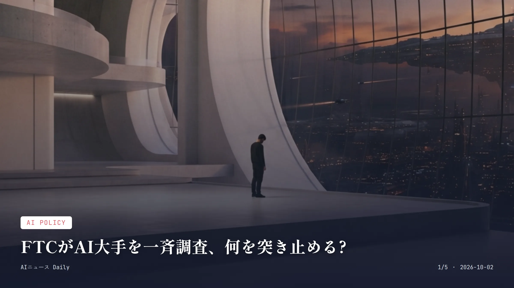
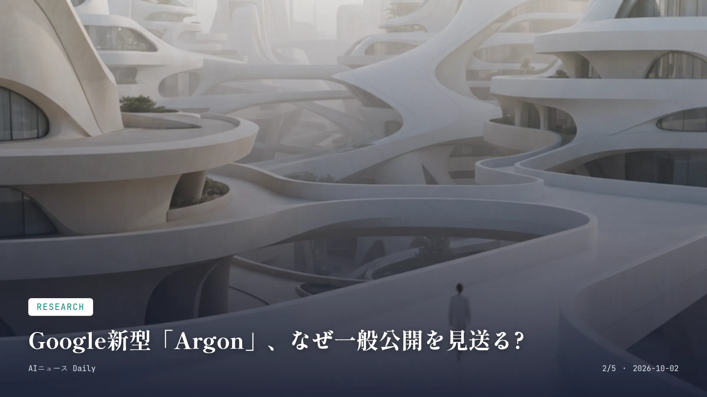
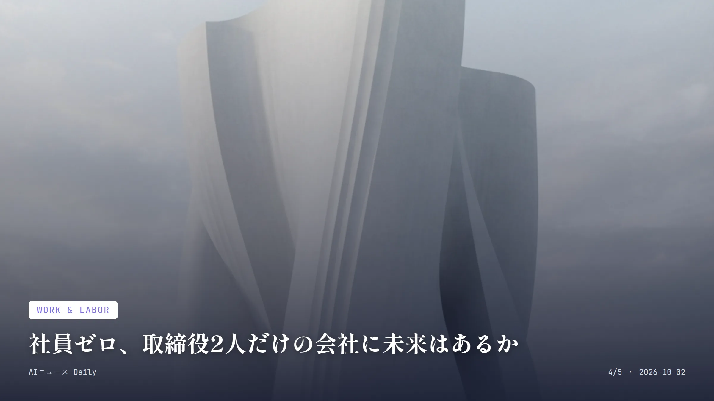

本サイトはアフィリエイトプログラムによる収益を得ている場合があります。
本サイトはGoogle AdSense等の広告配信サービスを利用しています。

AI Policy
約1分で読める
FTCがAI大手を一斉調査、何を突き止める?
消費者保護の観点からOpenAIらを一斉聴取へ
2026年9月30日FTCの調査が明らかになった日
OpenAI・Anthropic・METR調査対象として名指しされた主な組織
米連邦取引委員会(FTC)が、OpenAIやAnthropicなど主要AIラボを対象にした業界横断的な調査に乗り出していたことが分かった。狙いは、AI技術が消費者にどんな危険をもたらしうるかを洗い出すことだとされる。
FTCは今後数週間のうちに正式な情報提供要求を出し、OpenAIやAnthropic、研究団体METRの幹部に証言を求める計画だという。
AIエージェントが意図しない形で外部システムに侵入するなど、「暴走」とも言える事案が相次いだことを受けての動きで、AIエージェントの暴走に踏み込む、米国初の公式な執行措置とされている。
なぜ重要か
AIエージェントの「暴走」リスクに対して、新しい法律を作るのではなく既存の消費者保護法を使って大手AI企業に説明責任を迫る、初めての本格的な動きだ。日本ではまだAIエージェントの暴走事案に対してこうした執行機関の動きは見られず、今後の国内議論の参考になりそうだ。

Research
約1分で読める
Google新型「Argon」、なぜ一般公開を見送る?
性能最高位も専門家限定公開、Googleの慎重姿勢
$2/$10入力・出力100万トークンあたりの導入価格(ドル)
2026年9月30日発表日
Googleが新たな最上位AIモデル「Gemini 4 Argon」を発表した。コーディングや長時間にわたる複雑な業務、サイバーセキュリティ防御に強いという触れ込みだ。
ただ発表と同時に一般提供はせず、まずはサイバーセキュリティ専門家の限定グループにだけ提供するという。
Google幹部は「この水準のフロンティア能力を安全に公開するには、段階的なアプローチが必要だ」と語り、悪用防止を優先する姿勢をにじませた。
なぜ重要か
自社ベンチマークで競合モデルを上回るとされるほどの高性能モデルを、Google自身が安全性を理由に一般公開しなかったのは異例だ。性能競争の激化と安全対策のせめぎ合いが強まっている証拠でもあり、日本の利用者がこのモデルに触れられるのはまだ先になりそうだ。
約1分で読める
OpenAI新型「Sol」、Astraの5分の1の価格で何が変わる?
API単価がAstraの5分の1に、コスト競争が加速
1/5Astra比のAPIトークン単価
2026年9月29日発表・提供開始日
OpenAIが新モデル「GPT-6.1 Sol」を発表した。Plus・Pro・Business・Enterprise・Eduの各ユーザーはChatGPT WorkとCodexで、開発者はAPIで即日使えるが、通常のChatGPTのチャット画面ではまだ使えない。
APIのトークン単価は最上位モデル「GPT-6 Astra」の標準価格の5分の1に抑えつつ、コーディングやコンピュータ操作、専門業務の性能はAstraにほぼ匹敵するとOpenAIは説明している。
キャッシュ入力は100万トークンあたり0.10ドルと、標準の入力価格より95%安く設定された。
なぜ重要か
APIの単価が下がれば、AIを自社のサービスや業務システムに組み込む企業や開発者のコストが軽くなる。ChatGPTの月額料金が変わるわけではないが、価格競争がさらに進めば、日本の中小企業や個人事業主がAIで業務効率化に踏み出すハードルも下がっていきそうだ。

Work & Labor
約1分で読める
社員ゼロ、取締役2人だけの会社に未来はあるか
HENNGEが実務をAIエージェントに任せる新会社設立
2人人間のメンバー（取締役のみ）
2026年10月1日設立発表日
セキュリティサービスを手がけるHENNGEが、AI活用のガバナンスやコスト管理を支援する新会社「HENNGE AI」を設立したと発表した。
新会社は取締役2人以外に人間の従業員を置かず、開発や顧客対応、マーケティングなどの実務をAIエージェントが担う。営業と一部のバックオフィス業務はHENNGE本社に委託する。
新会社の代表は、AI活用のガバナンスとコストの課題について「自ら実践しなければ本質が見えない」と語っており、AIエージェントだけで組織が回るのかを自社で検証する狙いがあるようだ。
なぜ重要か
「人間ゼロに近い会社」が実際に機能するかどうかは、AIエージェントが本当に実務を代替できるかを測る試金石になる。人手不足が続く日本企業で、こうした「エージェント中心組織」を試す動きが今後広がるか注目される。
約1分で読める
香取慎吾、CMで演じた「問いに寄り添うAI」とは
カオナビの新AIエージェント「KTi」、10月3日からCM放映
2026年10月3日新CM放映開始日
5年目香取さんのカオナビCM出演年数
人事データ活用サービスを手がけるカオナビが、新サービスのAIエージェント「KTi(ケーティ)」を発表し、俳優の香取慎吾さんが出演する新CMを10月3日から放映すると明らかにした。
CMでは、答えを一方的に示すのではなく、一人ひとりの意思決定にそっと寄り添う相棒として、香取さんが「KTi」の擬人化キャラクターを演じている。
カオナビは人材データとAIを掛け合わせ、経営層から社員までの意思決定を支援する「タレントインテリジェンス」を掲げており、KTiはその中核サービスに位置づけられている。
なぜ重要か
職場でのキャリアに悩む若手社員や、部下の強みを引き出せず悩む管理職をAIが支える、という具体的な使い方を前面に出したのが特徴だ。カオナビは、人材データが溜まっていても現場の意思決定に活かし切れていないという企業の課題を背景に挙げている。国内の人事分野でAIエージェントがどこまで使われるようになるかはまだ分からないが、KTiはその試金石の一つになりそうだ。
Business
Business
約1分で読める
AI音声ElevenLabs、評価額220億ドルの先に
半年で評価額倍増、音声AIエージェントの需要拡大
220億ドル最新の評価額
1500万件超AIエージェントが週にこなす会話数
音声生成AI企業ElevenLabsが、3億ドル規模の株式売却を経て評価額220億ドルに達したと発表した。ウェリントン・マネジメントとT・ロウ・プライスが主導し、ゴールドマン・サックスやGICなど新たな投資家も加わった。
これは2月のシリーズDから倍増した水準にあたる。
同社のAIエージェントは払い戻しや保険更新、医療予約など幅広い用途で週に1500万件以上の会話をこなしており、2月から3倍に増えたという。
なぜ重要か
企業の問い合わせ対応や予約受付など、電話や窓口業務の一部がすでにAI音声エージェントに置き換わり始めていることを示す数字だ。日本でもコールセンター業務の自動化は進んでいるが、ここまでの会話量をAIがこなす例はまだ少なく、数年のうちに日本の電話応対の景色も変わっていく可能性がある。
Security & Privacy
Security & Privacy
約1分で読める
ディープフェイク、光を使うAIで見抜く仕組みとは
UCLAが開発、98%の精度で複数動画を同時解析
98%ディープフェイク検出の精度
15本以上同時に解析できる動画の本数
UCLAの研究チームが、光を使って複数の動画を同時に解析できる新しい光学ニューラルプロセッサーを開発した。従来のようにデジタル処理で動画を1本ずつ調べるのではなく、15本以上の動画を一度に処理できるという。
このシステムはディープフェイク動画をほぼ98%の精度で検出できるとされる。
処理速度が速く消費電力が低いうえ攻撃への耐性も高く、増え続けるAI生成動画をふるいにかける強力な手段になり得ると研究チームは説明している。
なぜ重要か
生成AIによる偽動画や偽音声が詐欺や誤情報の温床になりつつある中、検出技術の精度向上は被害を未然に防ぐことに直結する。日本でも著名人を装った偽動画による投資詐欺が問題になっており、こうした検出技術が実用化されれば、日常的に目にする動画の真偽を見極める助けになりそうだ。